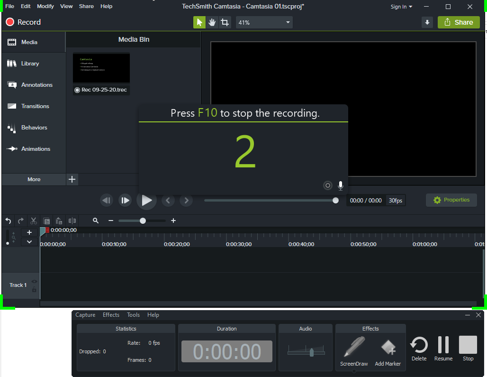
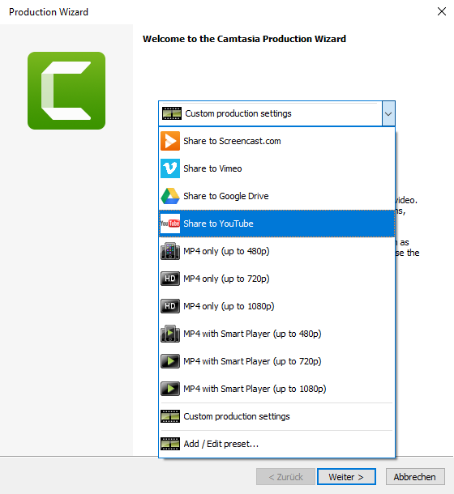

Introduction¶
This book is about Camtasia, a program developed by TechSmith. Camtasia is designed for recording videos from your monitor screen and editing the rec-orded videos. With this program, you can create interactive clips, online courses, and much more. You can record the whole screen as well as its in-dividual areas.
Camtasia records all mouse and keyboard actions on the screen. If neces-sary, you can also record your webcam and voice.
{kind=link}
You can edit recorded videos by adding various visual and sound effects to them. Once you are done with editing, the videos can be exported in various formats (MP4, AVI, MOV, etc.) or uploaded directly to your YouTube chan-nel.
{kind=link}
What is needed for this course¶
To perform the exercises described in this book, you will need:
Computer with Windows 10 system installed. For more information about system versions, see the manufacturer’s website.
Camtasia program (Windows). All the examples in the book are made in Camtasia for Windows 2020. If you are using another version of the pro-gram, some of the described features may differ from the features avail-able in your version of the program. The following chapter provides de-tails on how to download the program from the TechSmith website and install it on your computer.
Microphone for voice recording. We are going to make a video with voiceover, i.e. to accompany the actions performed on the monitor screen with voice comments. To record the voice, you can use a built-in microphone (such as a microphone in your laptop) or an external micro-phone. As a rule, built-in microphones are mostly used for communication on the Internet and do not provide proper sound quality. To create high-quality videos, it is recommended to use an external microphone.
Final result¶
To get familiar with the basic features of Camtasia, we will create a video (screencast) describing how to use the Microsoft Edge browser. As we go through the material, we will edit the video, add various effects to it, and then export it to a special video format that can be viewed both on your lo-cal computer and uploaded to various video hosting sites (such as YouTube).
How to use this book¶
The material in the book is given in the sequence that is usually used when creating standard projects in Camtasia, and namely:
Installing and configuring Camtasia
Recording and dubbing a screencast
Editing the screencast and adding effects to it
Exporting the screencast to MP4 format and uploading it to YouTube
If necessary, you can skip some of the steps above (for example, if you al-ready have Camtasia installed or have already a recorded screencast) and go directly to the chapter you are interested in.
You can also use the book as a reference when creating your own projects, referring to one or another chapter that describes how to work with the re-quired functions.
Prior knowledge¶
We assume that you have experience with the Microsoft Windows operating system, that is, you know how to run programs, save files, and perform other basic operations. Experience with Camtasia or other video editors is not required.